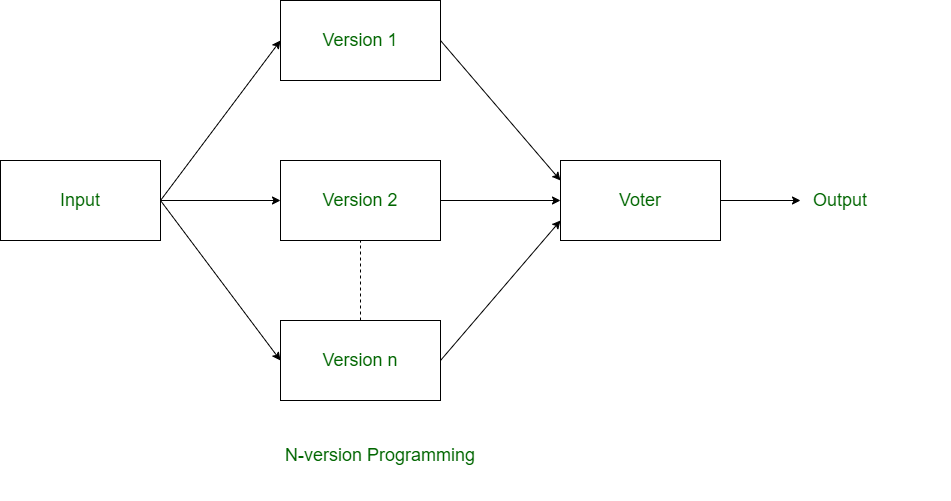
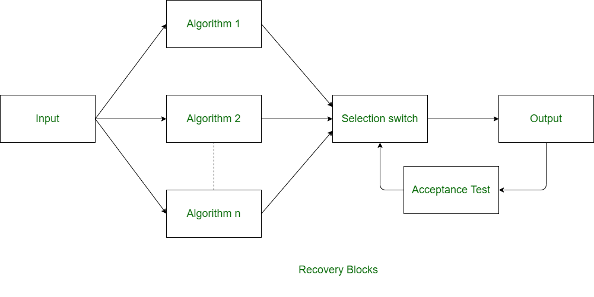
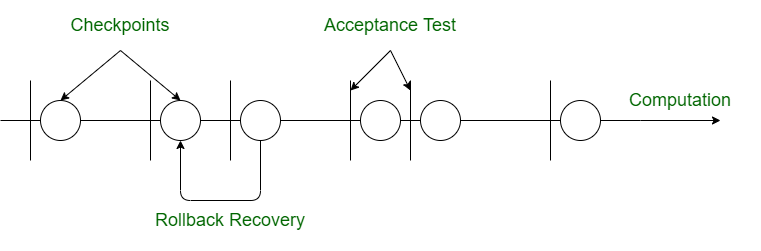

11.2 Fault Tolerance
Fault tolerance is the ability of a system to continue delivering correct service despite the presence of faults. It is one of the reliability attributes introduced in §11.1 Software Reliability and is achieved when 100% error-free software is impractical — the system is designed to detect, contain, and recover from failures rather than prevent every defect.
Definition
- Fault tolerance means the system can operate correctly (or degrade gracefully) even when one or more components fail or produce incorrect results.
- A fault is a defect in the system; an error is the manifestation of a fault; a failure is when the error causes incorrect external behaviour.
- Fault tolerance does not eliminate faults — it prevents faults from propagating into observable failures.
- It is essential in safety-critical, real-time, and high-availability systems where downtime or incorrect output is unacceptable.
Basic fault tolerant techniques
- Redundancy: Duplicate hardware or software components so that a backup can take over when the primary fails.
- Checkpointing: Save the system state at intervals so execution can be rolled back to a known-good point after a failure.
- Error detection and correction: Use checksums, parity bits, voting, or exception handlers to detect and correct erroneous outputs.
- Failure prediction: Monitor system behaviour to anticipate impending failures and trigger preventive action before a fault becomes a failure.
- Load balancing: Distribute workload across multiple replicas so that the failure of one node does not halt the entire service.
- Isolation: Confine faults within a module or process boundary so they cannot corrupt unrelated components.
- Replication: Maintain multiple copies of data or services; if one replica fails, others continue serving requests.
- Dynamic reconfiguration: Reorganise the system at runtime — reroute traffic, activate standby components, or reassign tasks when a fault is detected.
Fault removal vs fault masking
- Fault removal eliminates the underlying defect through debugging and re-testing — the fault no longer exists in the code.
- Fault masking hides the effect of a fault at runtime without removing it — the fault may still be present but its incorrect output is overridden or corrected.
- Recovery blocks and N-version programming are fault-masking techniques: they deliver a correct result despite a faulty version executing.
- Fault removal is preferred during development; fault masking is used at runtime when residual faults cannot be eliminated before deployment.
Forward vs backward error recovery
- Backward error recovery restores the system to a previously saved checkpoint and re-executes from that point — used in checkpoint/rollback schemes.
- Forward error recovery continues execution from the current state by applying corrective action — used in recovery blocks and N-version programming where an alternative version produces the correct result.
- Backward recovery requires saving and restoring state, which adds storage and time overhead but guarantees a clean restart.
- Forward recovery avoids rollback overhead but requires redundant computation paths (alternate versions or acceptance tests).
Design diversity
- Design diversity means implementing the same specification using independent teams, languages, algorithms, or compilers so that correlated faults are unlikely.
- The goal is to ensure that versions fail independently — a bug in one version should not appear in the others.
- It underpins both recovery blocks and N-version programming, where multiple diverse implementations of the same function are maintained.
- Complete independence is difficult to achieve in practice because teams may share specifications and test cases, introducing common-mode failures.
Recovery block scheme (RB)
In the recovery block scheme, versions are tried sequentially. The primary version runs first; if its output fails the acceptance test, the system falls back to alternate versions one at a time until one passes or all are exhausted.

The recovery block syntax is:
Ensure T
By P
Else by Q1
Else by Q2
...
Else by Qn
Else Error- T is the acceptance test that validates the output of each version.
- P is the primary version; Q1, Q2, …, Qn are diverse alternate versions.
- Versions are executed one after another — only one version runs at a time until a passing result is found.
- If all versions fail the acceptance test, the Error clause is triggered.
N-version programming (NVP)
In N-version programming, N independent versions execute in parallel on identical inputs. A voter selects the majority result (or applies a more sophisticated selection rule) to produce the final output.

- All N versions run simultaneously, so NVP has higher computational cost than recovery blocks but lower latency on the success path.
- The voter compares outputs and selects the result agreed upon by at least two versions (for N = 3).
- NVP masks faults as long as a majority of versions produce the correct output.
- Common-mode failures across all versions defeat NVP — design diversity must be genuine.
Checkpoint and rollback recovery

- The system periodically saves its state (checkpoint) to stable storage.
- When a failure is detected, execution rolls back to the most recent valid checkpoint and resumes from there.
- This is a backward error recovery technique — it does not require diverse versions but does require idempotent or repeatable computation after rollback.
- Checkpoint frequency trades storage overhead against the amount of work lost on rollback.
Failure probability — recovery block vs N-version programming
Let p be the probability that a single version fails (produces incorrect output or fails the acceptance test). Assume versions fail independently.
- Recovery block (sequential, k versions): All k versions must fail for the block to fail. P(RB fails) = pk.
- N-version programming (parallel, N = 3, majority vote): NVP fails when at least 2 of 3 versions fail. P(NVP fails) = 3p²(1 − p) + p³ = 3p² − 2p³.
- For p = 0.01: P(RB fails with k = 3) = 10⁻⁶; P(NVP fails with N = 3) ≈ 2.98 × 10⁻⁴ — RB is more reliable for the same number of versions when p is small.
- For p = 0.1: P(RB fails with k = 3) = 0.001; P(NVP fails with N = 3) = 0.028 — RB still wins, but the gap narrows as p increases.
- NVP trades higher parallel cost for lower response time; RB trades sequential latency for lower resource usage.
Recovery block — pseudocode
// Recovery block: sequential trial with acceptance test
versions = [P, Q1, Q2, Q3] // primary + alternates
acceptance_test = T
FOR each version v IN versions DO
result = EXECUTE(v, input)
IF acceptance_test(result) THEN
RETURN result // forward recovery — correct output found
END IF
END FOR
RAISE Error // all versions failed acceptance testN-version programming — pseudocode
// N-version programming: parallel execution with majority vote
versions = [V1, V2, V3] // N = 3 diverse implementations
results = []
PARALLEL FOR each version v IN versions DO
results.add(EXECUTE(v, input))
END PARALLEL
// Majority voter — select result agreed by at least 2 versions
FOR each candidate r IN results DO
count = COUNT(results WHERE result == r)
IF count >= 2 THEN
RETURN r // forward recovery via majority
END IF
END FOR
RAISE Error // no majority agreement — all disagree or 2+ failedRB sequential vs NVP parallel — summary
| Feature | Recovery Block (RB) | N-Version Programming (NVP) |
|---|---|---|
| Execution | Sequential — one version at a time | Parallel — all versions simultaneously |
| Recovery type | Forward error recovery | Forward error recovery (majority vote) |
| Resource cost | Lower — only one version active at a time | Higher — all N versions run concurrently |
| Latency | Higher on failure path (tries versions in sequence) | Lower — determined by slowest version |
| Failure probability (k = N = 3) | P(fail) = p³ | P(fail) = 3p² − 2p³ |
| Acceptance test | Required — each version validated before proceeding | Not required — voter compares outputs directly |
| Design diversity | Primary + alternates developed independently | All N versions developed independently |
Component-based fault tolerance evaluation is modelled in the §11.7 PNZ Model, which accounts for imperfect debugging when predicting dependability of systems built from redundant components.
Q: Define fault tolerance. Explain fault removal vs fault masking. Compare recovery blocks and N-version programming. Write the recovery block syntax and failure probability formulas.
Model answer points:
- Fault tolerance = ability to deliver correct service despite faults; does not remove defects, masks or recovers from them.
- Fault removal = debugging; fault masking = runtime correction without removing the defect (RB, NVP).
- Backward recovery = checkpoint/rollback; forward recovery = alternate version or voting.
- RB sequential: Ensure T By P Else by Q1…; P(fail) = pk.
- NVP parallel: N versions + majority voter; P(fail) = 3p² − 2p³ for N = 3.
- Design diversity: independent teams/languages to avoid common-mode failures.
- Basic techniques: redundancy, checkpointing, error detection, isolation, replication, load balancing, dynamic reconfiguration.